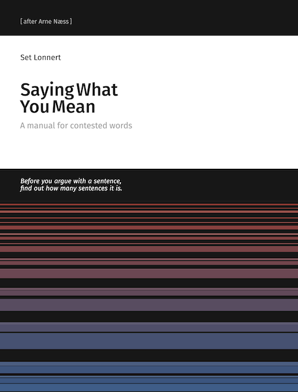

Set Lonnert
Humanistics & Technology
Since 1980 • Humanistics • Philosophy • Computing

Combining humanities and technology since 1980. When there were only 23,500 webservers in 1995, I had already been working with computers for fifteen years, exploring the intersection of analytical philosophy and computing—a perspective that remains crucial for bringing clarity and simplicity to our digital world.
With experience spanning over four decades and academic training in the humanities, I bring a unique lens to understanding how technology shapes society and human experience.
1995: 23,500 webservers, homepage launched
1998: 2.4M websites (Google launches)
2022: SLHT celebrates 25 years
Today: Still bridging worlds
2027: SLHT 30 years
Featured Work
New — Outside the Series
Comfortication (2026)
AI, Friction, and the Future of Human Becoming. For centuries we have worked to remove friction: the effort a task demands, the waiting, the uncertainty of a decision, the labour of calculation and memory. This book gives that process a name — comfortication — and sets against it a second and equally ancient principle: that certain difficulties are not obstacles to be cleared away, but the medium through which we acquire competence, judgement and meaning.
Most of history removed friction from around the mind while leaving the mind's own work intact. Artificial intelligence is the first widely adopted technology to reach inside that work. An inquiry, not a verdict.
Edition: 1
ISBN: 9789181345438
Format: A5, 148 × 210 mm
Pages: 184

Saying What You Mean (2026)
A manual for contested words.
Two people argue for two hours and get nowhere. Neither has lied and neither has misquoted. They were reading one sentence two different ways, and nothing in the argument was built to notice.
This is a working manual for the moment a word stops being free and starts being a rule — in a policy, a statute, a platform's terms of service, an accusation. It sets out seven steps for taking a contested sentence apart and nine for the argument it was a premise in; six norms for doing either in good faith, each printed with what it will cost the person who keeps it; five verdicts an argument can honestly end at; and four worked audits of live material, one of which produces nothing and is printed anyway. Seven exercises are answered in full.
Arne Næss put the first version of this material in front of students as stencils in occupied Norway in 1941, and for a generation afterwards a form of it was what Norwegian undergraduates were taught before they were taught anything else. This is not an edition of his book, and nothing here rests on it: it is the same job done again, for a world where the rules are applied nine billion times in six months by machines.
It does not ask anyone to speak more precisely. Chapter 7 is the argument against that, and it names who pays.
Edition: 1
ISBN: 978-91-8150-115-5
Format: 170 × 220 mm
Pages: 180
A Calculus of Representation
A Calculus of Representation
Two volumes • Books on Demand • 2026A two-volume work developing a framework carried since the 1980s: a notation that keeps what there is and how it is grasped on the page at the same time, instead of collapsing either into the other.
The first volume sets the notation down, and finds it already present — unremarked, and six centuries apart — in Ockham and in Frege. The second sets it in motion, and asks what a record of an inquiry still holds once the inquiry has changed its mind. Both are published under CC0, with no rights reserved.


The Code Crafting Series
Code Crafting
Five volumes • Books on Demand • 2026A series about how computing actually works and what it commits us to — written on the conviction that the technical and the philosophical questions are the same questions, asked at different depths.
The volumes cut the field along different axes: across the foundations of computation, down through a single language from silicon to semantics, outward toward artificial minds and the conditions that produced them, and back again to the daily, unfinishable condition of software work.


Philosophy in Practice
Analytical Clarity
Bringing the precision of analytical philosophy to the often murky world of technology. Clear concepts lead to better understanding and more thoughtful implementation. This clarity helps e.g., expose hidden assumptions and prevents confusion from propagating into systems that must operate reliably at scale.
Historical Perspective
Over four decades of computing experience provides context that's invaluable for understanding current trends and anticipating future developments. It also sharpens the ability to distinguish enduring principles from short-lived trends.
Humanistic Technology
Technology exists within society, not separate from it. Every technical decision has human implications that deserve careful consideration. And every system we design, deploy, or maintain carries with it assumptions about how people should live, work, and interact with one another.